| 日付 | 2014年12月28日（日） - 2014年12月31日（水） | ||
|---|---|---|---|
| 山域 | 四国の山 | ||
| メンバー | 家族（妻、長女・3歳、長男・1歳） | ||
| 山行形態 | 子連れ3泊4日ホテル泊 | ||
| アクセス | 車、船 | ||
| ルート (Map) |
|
2日目
今日は寒霞渓に行く予定だったが、空を見るとあまり天気が良くない。
天気予報は曇時々晴になっているが、雲が低いので寒霞渓は明日にして
本日は小豆島観光をすることにする。
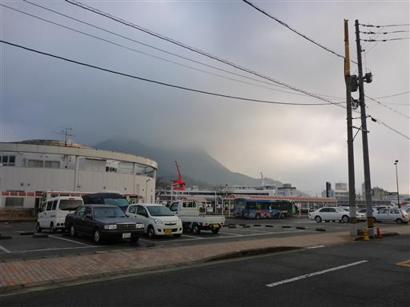
まず最初に訪れたのが土渕海峡。
小豆島は東西二つの島に分かれていて、その間にあるのが土渕海峡だ。
この海峡は世界一狭い海峡としてギネスブックに登録されている。
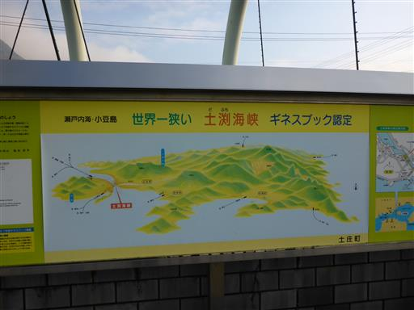
これが土渕海峡。海峡の幅は最峡部で9.93m。
見た目は川と全く変わらない。コンクリートで固められていなかった頃の景色を見たかった。
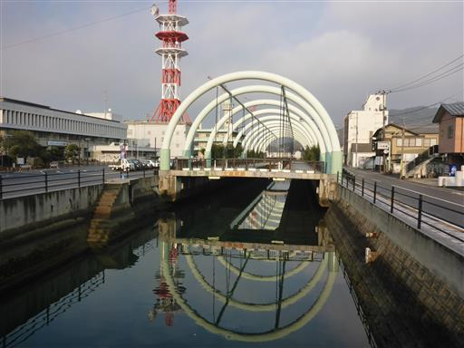
土渕海峡を見学していたら、だんだんと青空が見えてきた。
これなら山に行っても視界がありそうだ。急遽、寒霞渓に向かうことにする。
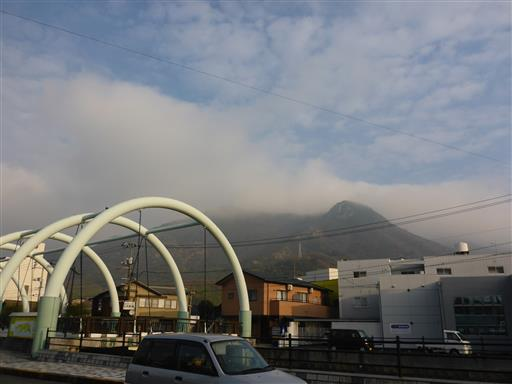
車を寒霞渓に向けて走らせると、岩がちな独特の景観が広がってくる。
寒霞渓は妙義山、耶馬溪と合わせて日本三大奇勝に選ばれている。
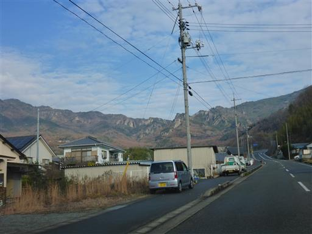
駐車場に到着する。標高280m。
停まっている車の数は少ない。
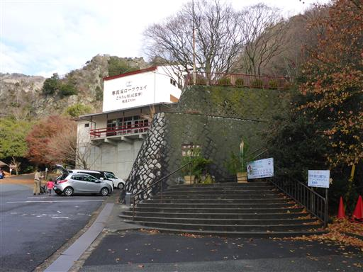
ここはロープウェイの紅雲駅。
上まではロープウェイでも車でも歩いても行くことができる。
我々はロープウェイを使わずに、青色の線の表登山道を登り、
赤色の線の裏登山道を下る予定だ。
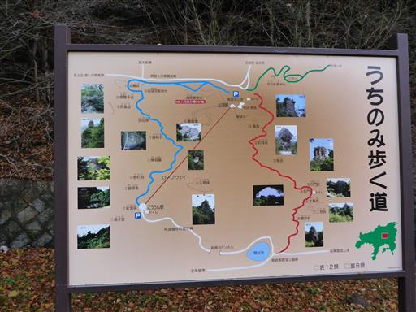
歩き始めてすぐのところに東屋がある。
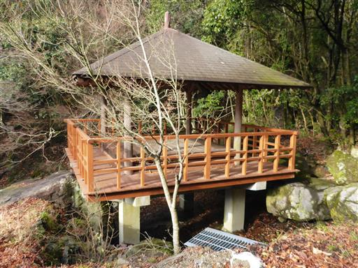
登山道と言っても全て舗装されている。
妙義山に比べると面白味がない道だ。
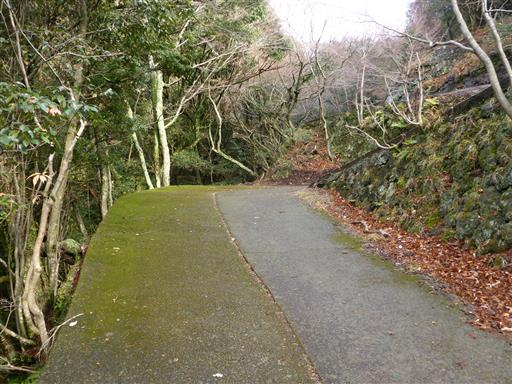
第3景 錦屏風（きんびょうぶ）の標識。
第2景は先ほどの東屋で紅雲亭（こううんてい）と呼ばれているそうだ。
第1景は残念ながら見逃してしまった。
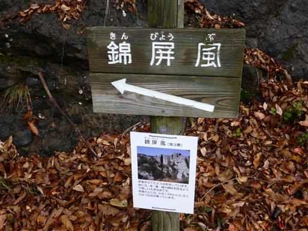
こちらが錦屏風。屏風のような形をしていて
紅葉時には錦のように美しく彩られるらしい。
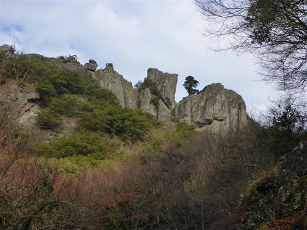
道はつまらないが案外自然は豊富で、美しい樹林帯に囲まれている。
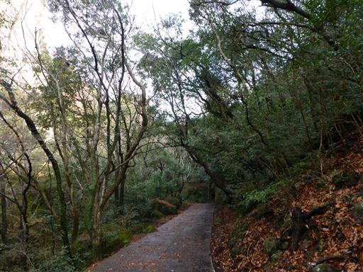
第4景 老杉洞（ろうさんどう）。岩にぽっかりと穴が開いている
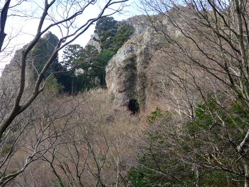
辺りはサルの鳴き声がうるさい。一匹小さなサルを発見。

第5景 蟾蜍岩（せんじょがん）。蟾蜍とはヒキガエルのことらしいのだが、それらしきものは見えない。
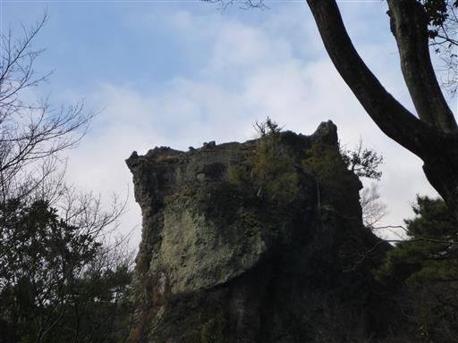
第6景 玉筍峰（ぎょくじゅんぽう）。玉筍とはタケノコのこと。
どれもこれも岩の名前が難しすぎて、振り仮名がないとまず読めない。
この岩は確かにタケノコっぽい形をしている。
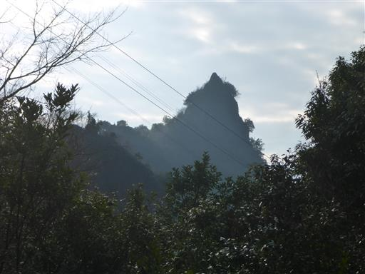
第7景 画帖石（がちょうせき）。
スケッチブックのように見えるとのこと。岩の筋がページを表す。
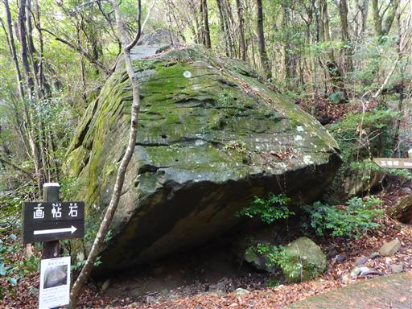
第8景 層雲壇（そううんだん）。一際立派な岩だ。
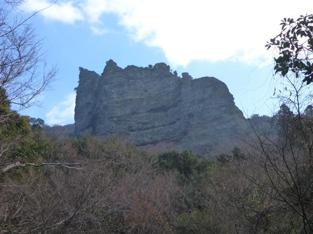
岩にびっしりと細かい葉が敷き詰められている。
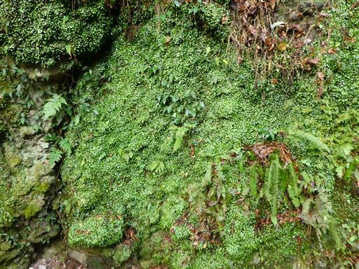
第11景 女蘿壁（じょらへき）。
女蘿とはサルオガセのことらしいが、今では無くなってしまったらしい
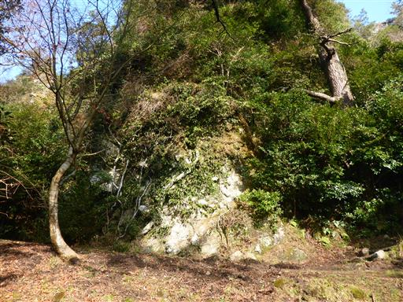
標識から湯気が出ている。

娘はおかしな歩き方をして楽しんでいる。
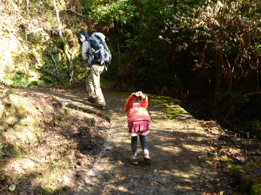
階段は全く現れず、舗装路が続く。ジグザグ道で非常に非効率だ。
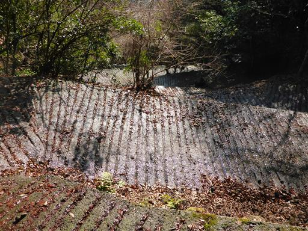
第10景 烏帽子岩（えぼしいわ）。見事な一本岩だ。
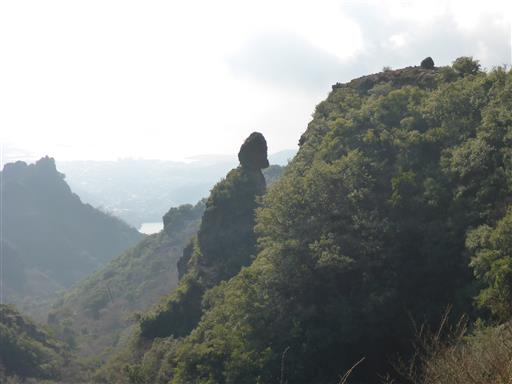
松ぼっくりがたくさん落ちているので、拾って遊ぶ。
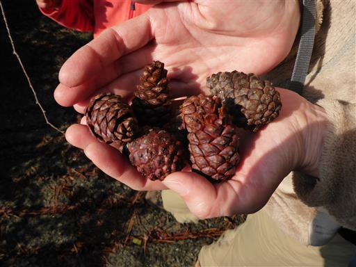
稜線に到達したところで車道に出てくる。
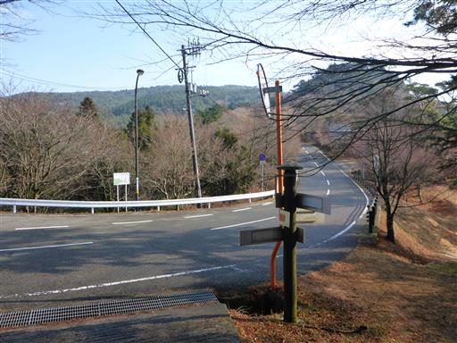
第12景 四望頂（しぼうちょう）。
四囲の眺望がすばらしい。烏帽子岩の奥に見える岩壁が第9景 荷葉岳（かようがく）だ。
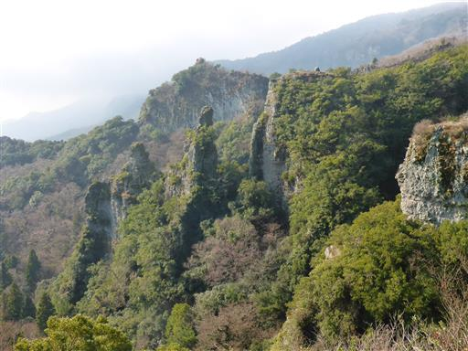
反対側も岩だらけの迫力ある景色が広がっている。
左上の方に見える東屋がロープウェイ山頂駅の展望台だ。
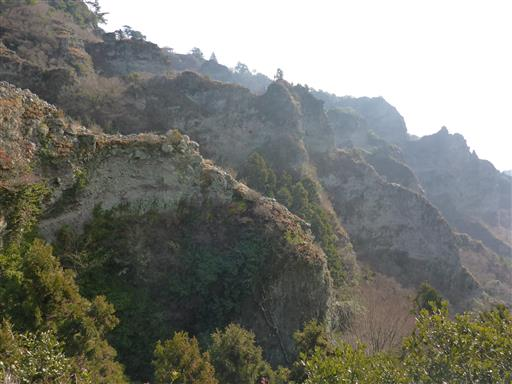
車道と並行する遊歩道を歩いて山頂駅を目指す。
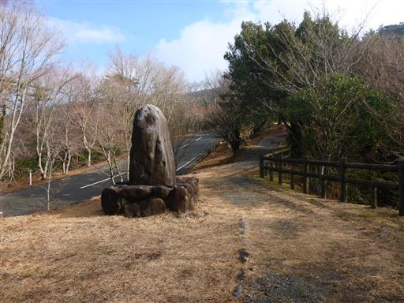
右手には素晴らしい景観が広がる。
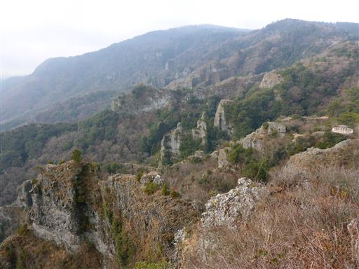
鷹取展望台に到着。標高620m。
ロープウェイ山頂駅まで行くと人が多そうなので、ここで食事をとることにする。
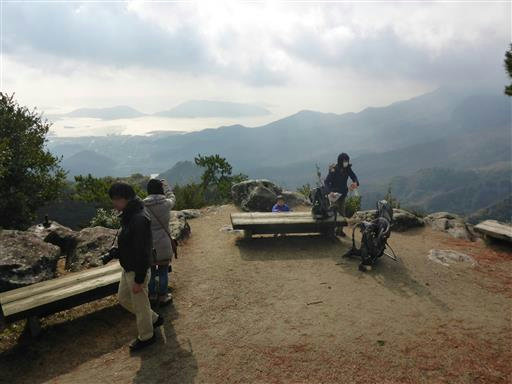
ベンチに腰を下ろして、景色を眺めながら昼食をとる。
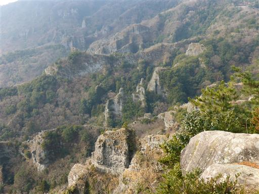
展望台から僅かの距離でロープウェイ山頂駅に到着する。
ここには大きな駐車場がある。ロープウェイよりも車で来る人の方が多そうだ。

ここが寒霞渓の中心地。巨大な標識が置かれている。
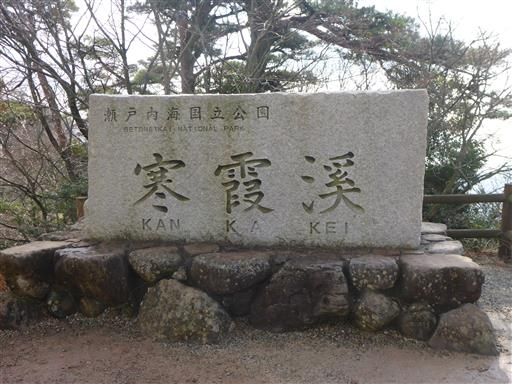
かわら投げの穴。売られている瓦を投げて穴に入ると良いらしい。
瓦は円盤形。土のようなものでできていて、環境に配慮されている。
値段は5枚200円で結構高い。いかにも古くからの観光地っぽい代物だ。
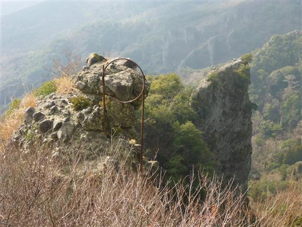
下山は裏登山道。歩く人はおらずひっそりとしている。
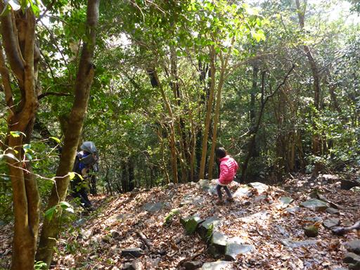
道端にいた小さなカタツムリ。
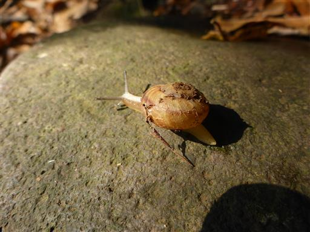
表は12景、裏は8景だ。
まずは第1景 鹿岩（しかいわ）。確かに鹿の形に見える。
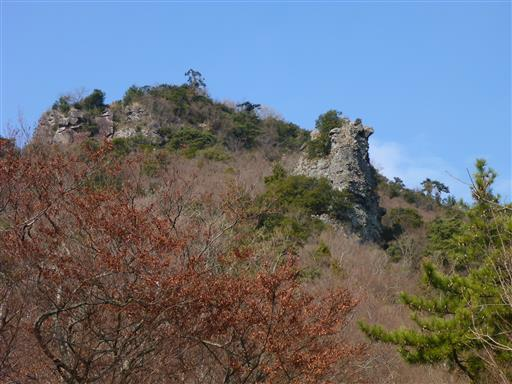
第2景 松茸岩（まつたけいわ）。
小さな岩の上に大きな岩が乗っかる不思議な形だ。裏8景は素直な命名が多い。
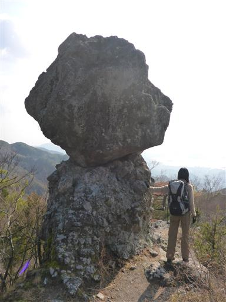
道は途中から舗装路になる。湿っていて非常に滑りやすい。
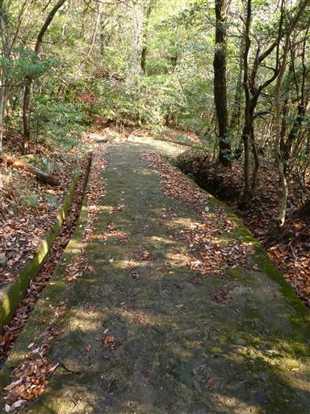
第4景 石門（せきもん）。
ひっそりとした場所に、こんな立派な石門があるとは思わなかった。
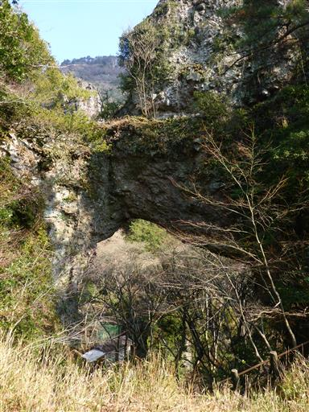
石門を潜って階段を下ると寺がある。
第5景 大師洞（たいしどう）だ。寺の建物が岩の中に埋まっている。
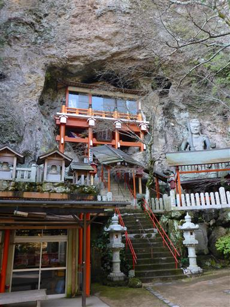
階段を上って中に入ることができる。
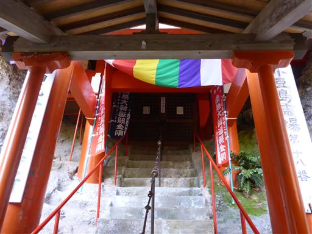
階段は岩の中に続いていて、下から岩の中の建物に入る。
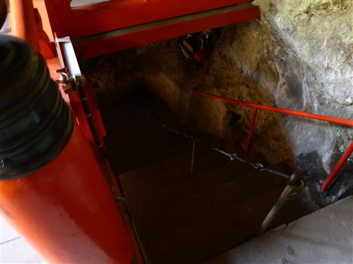
内部はよく手入れされている。
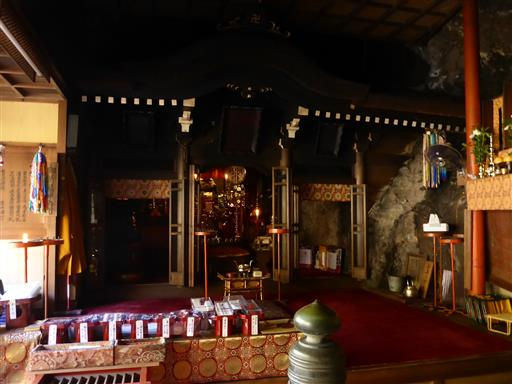
周囲は岩壁で、この建物が岩の中に建てられていることがよく分かる。

窓からは眼前に素晴らしい景色が広がる。
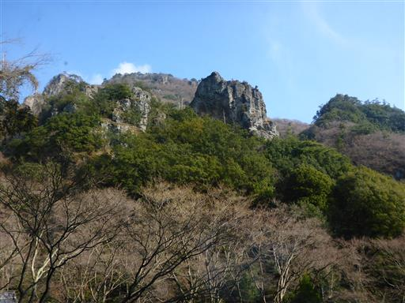
古びた鐘楼。鐘を一突きする。
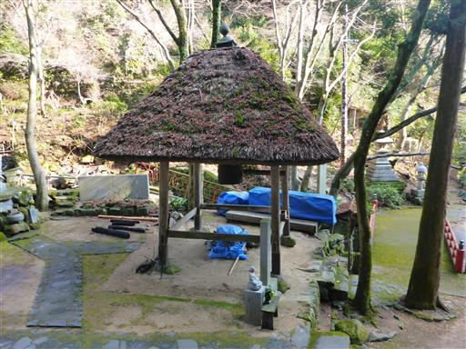
先ほど通った石門をもう一度眺めたら、歩を先に進める。
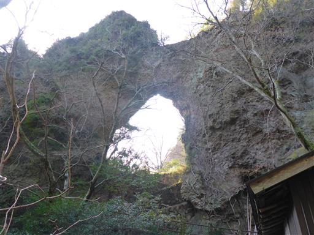
第3景 幟岳（のぼりだけ）。幟のように見えることから。
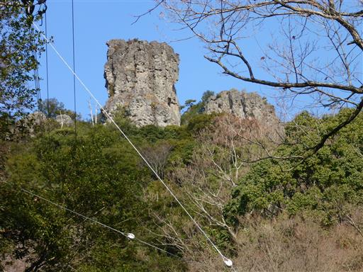
第6景はよく分からず。
第7景 二見岩（ふたみいわ）。手前の2つの岩だ。
伊勢の二見ケ浦の夫婦岩に似ているからとのことだが、似ているか？
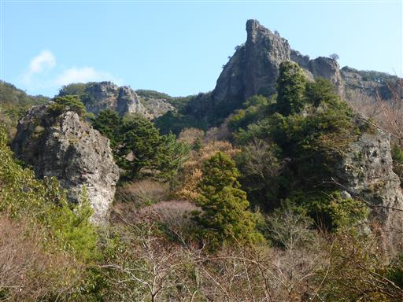
そびえ立つ岩峰を眺めながら下っていく。
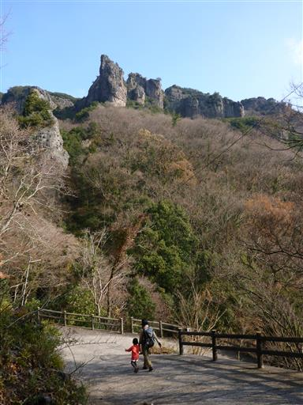
第8景 螺貝岩（ほらがいいわ）。この岩が一番名前と形が合っている。
この岩は二見岩の右側の岩とそっくりで、同じ岩を角度を変えて
見ているだけのように思えるのだが、実際はどうなのだろう？
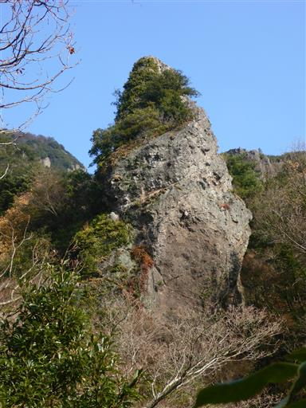
裏8景を見終えたところで車道に下山。ここから駐車場まで車道歩きだ。
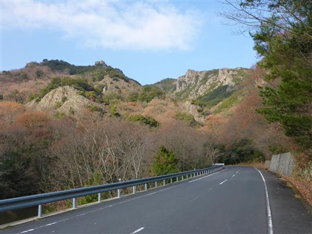
駐車場に到着。朝来た時より晴れ渡っていて、景色が美しい。
次は寒霞渓の近くにある四方指展望台へ向かう。駐車場はガラガラだ。
変わった形の展望台が建っている。
ここは360度の展望台だが、今日は全体的に霞んでいるため大したものは見えない。
風が強く寒いので、展望台を下りて公園内で少し遊んだら次の目的地に向かう。
中山千枚田に到着。特に観光地ではないのだが、
小豆島を舞台にした名作「八日目の蝉」のロケ地のため、人気のスポットになっている。
すごい傾斜の道。歩くのも一苦労だ。
石垣が並んでいる。棚田をここまで造るのは大変だっただろう。
近くに素麺の工場がある。小豆島の名産品の一つだ。
美しい棚田を後にして宿に戻る。